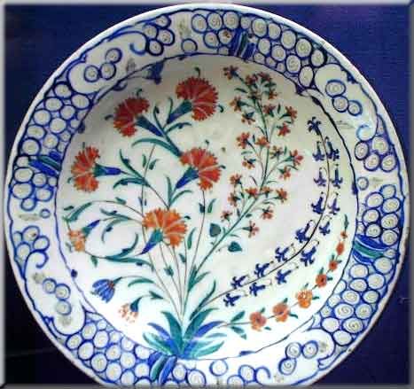

Origins of the Ottoman Carnation Decals
by Claire Sherwell
The source and identity of the very handsome decal set used by Singer on machines such as the 12K, VS1, VS3/28K but most of all on the 48K, has been the subject of intense discussion on several sewing machine mailing lists for the last several years.
Suggestions that the decals were derived from Ancient Egyptian, Indian or Oriental art, or that they resemble orange slices or peacock tails or that they represent several US or English flowers have been made, always with an inconclusive identification of the flowers depicted.
Thanks to some hard work and sharp eyes the source is now becoming clear. We have all been apparently looking in the wrong place and time! It appears that the Singer pattern is a European interpretation of patterns used on ceramics, fabrics and metalwork in the Ottoman Empire in the 16th and 17th centuries.
The first clue came from some curtain fabric which was produced in the UK by Yarnolds in 1976 with the pattern shown below. The pattern is called 'Khandahar' after a town in Afghanistan.
A picture of a Turkish tile pattern made in Iznik which dates to c.1660, and which is in the Victoria and Albert Museum in London.
Compare this with the large flower heads within the Singer decal design.
This discovery was followed up with a visit to the Ashmolean Museum in Oxford to talk to people knowledgeable in the field, and they came up with the following ceramic designs.
Tulips, dianthus (carnations) and roses were often used in Islamic designs during the 16th and 17th centuries. The first dates to 1580 and was made in Iznik, Turkey.
Compare with the forget-me-not-like flowers in the Singer design
The second is a tile panel from Damascus in Syria which dates to 1650
Below is a porcelain dish dating from 1575 - 1600 from Iznik in Turkey, which again shows an arrangement of flowers and foliage very similar in form to those in the Singer decals.

Finally, the lower part of a dish & cover, Iznik, 2nd half of 16th century from the Victoria and Albert Museum
Thinking about it, it is not very surprising that Singer produced their distinctive interpretation of these designs when they did.
For example, the Victorian compendium of decorative styles "The Grammar of Ornament" produced by Owen Jones, categorized different styles collected from around the world and was widely used as inspiration by designers in every aspect of Victorian life; ceramics, glass, metalwork, furniture, carpets, textiles, wallpapers and interior designs.
The prolific designer and innovator Christopher Dresser, who was far ahead of his time, contributed to The Grammar of Ornament. He was greatly interested in plant designs, as was the Arts & Crafts movement led by William Morris. William de Morgan, the most famous Arts & Crafts tile maker, used colour and designs inspired by Ottoman pottery, while William Morris and others used Ottoman patterns on many items such as fabrics, wallpapers and tiles.
These decals were introduced on the Singer Model VS1 around 1884.
The Singer 48K, which was manufactured exclusively with Ottoman Carnation decals, came into production in 1900 (much later than many similar German transverse shuttle models were being marketed).
Ottoman Carnation decals were therefore being produced around the time of Queen Victoria's Golden Jubilee in 1887, throughout the 1890s and Victoria's Diamond Jubilee in 1897 until c1911.
There was a great deal of popular interest in Levantine and Indian design at this time. Huge parades were held in London with potentates and emissaries from all Britain's colonies taking part. Victoria had taken the title Empress of India in 1876 and was fascinated with Levantine and Indian design, so these styles were very fashionable.
So there we have it, The 'Ottoman Carnation' decals!
© Claire Sherwell & Alan Quinn 2001, 2002. All Rights Reserved
This page may not be reproduced or distributed in part or in whole without the prior written permission of the copyright owners